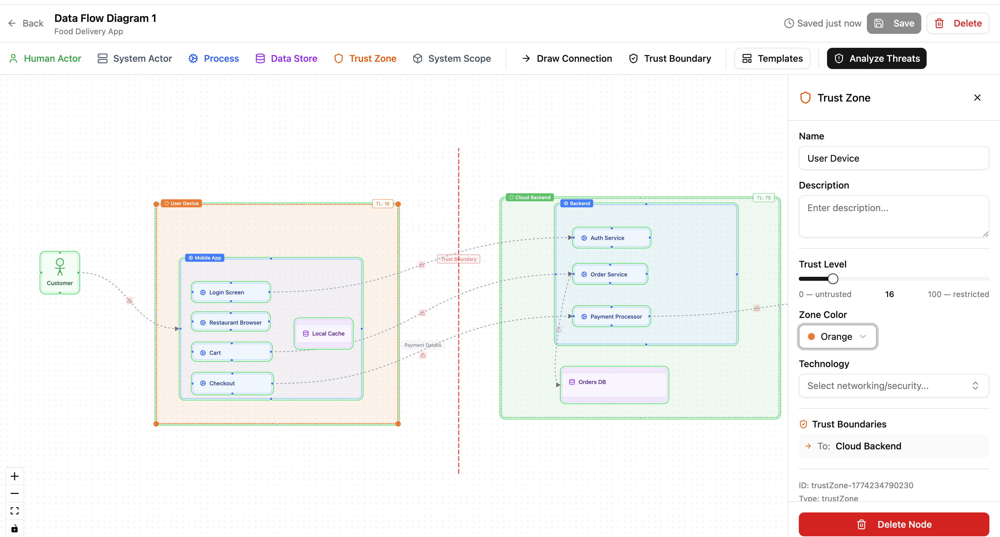
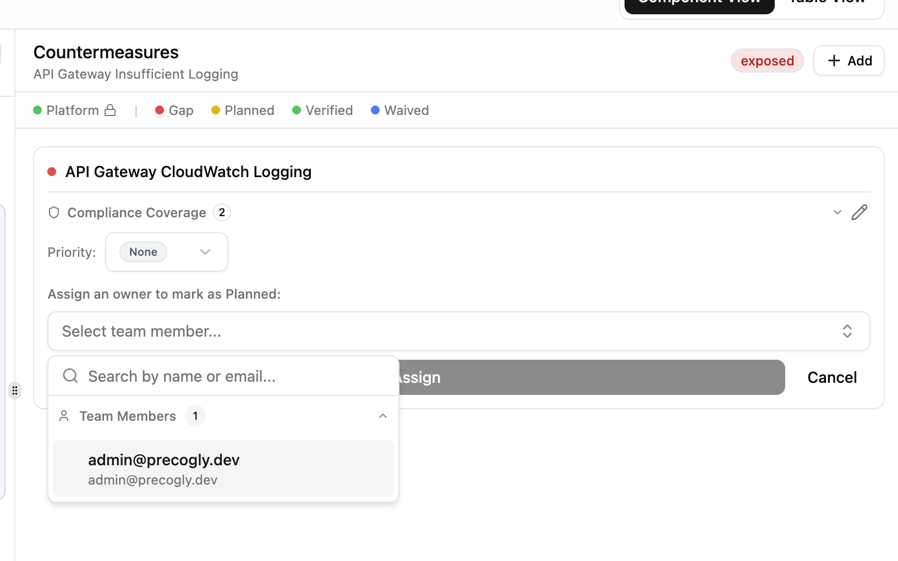

End-to-End Threat Assessment Workflow¶
Precogly is most useful when the diagram, threat analysis, risk register, pentest scope, and final report are treated as one assessment workflow. This guide shows how to move from an architectural idea to a reviewable threat model and an evidence package for engineers, testers, auditors, and decision-makers.
The assessment lifecycle¶
Use the workspace in this order:
- Create the threat model and establish ownership.
- Define context, scope, assumptions, and data assets.
- Draw the architecture on the primary DFD.
- Review threats and their taxonomy context.
- Record countermeasures and implementation status.
- Create or review business risks and responses.
- Prepare the penetration-testing scope.
- Generate and review the appropriate report.
Each stage depends on the previous one. A pentest scope cannot prioritize a component that has not been represented on the primary DFD, and a risk review is difficult to defend if its contributing threats and controls are incomplete.
1. Create and organize the model¶
From the dashboard, choose New Threat Model. Give the model a name that identifies the
system and, when useful, its lifecycle or release, such as Payments API — 2026 Q3.
Choose the owning team carefully. Team membership controls who can view and edit the model; the organization Security Team role provides organization-wide administration. See Roles and Permissions for the role matrix.
After creation, confirm the model appears under the intended team and business unit. This prevents a model from becoming difficult to find or being reviewed by the wrong group.
2. Establish context and scope¶
Start on the Overview tab. Record the business purpose, criticality, assumptions, and boundaries before drawing implementation details. A reviewer should be able to answer:
- What system or service is being assessed?
- Which deployment, release, or environment does the model represent?
- What is explicitly in scope and out of scope?
- Which assumptions still need confirmation?
- Which data assets would make a compromise materially harmful?
Use the system context fields for the narrative that applies to the whole model. Add data assets with their classification and confidentiality, integrity, and availability ratings. Place each asset on the components and flows where it is stored or transmitted.
Reference images can capture an existing architecture drawing or whiteboard. Keep the image as context and model the security-relevant relationships explicitly on the DFD.
3. Build the primary DFD¶
Open the primary DFD from the DFD carousel. Add the components that participate in the system boundary, then connect them with data flows. Use trust zones to show meaningful changes in trust level, deployment boundary, or administrative control.

The primary DFD is the source of truth for analysis. A threat model can contain secondary DFDs for alternate views or reference diagrams, but secondary diagrams do not create the analysis components, threats, or countermeasures used by the workspace.
For each element, capture enough detail for another person to understand its boundary:
- Use Human Actor and System Actor for external users and services.
- Use Process for executable or logical processing units.
- Use Data Store for persistent storage and queues where stored data matters.
- Label data flows with the operation or exchange they represent.
- Add trust zones when the crossing changes the security assumptions.
- Add data assets to components and flows that handle them.
Avoid using the DFD as a decorative infrastructure diagram. A single node representing an entire platform can hide different trust levels and produce threats that are too broad to review. Split a boundary when the control, owner, or data exposure differs.
You can switch between DFD3 and Yourdon notation from the toolbar. The notation changes the visual symbols, not the underlying components or flows.
4. Review threat analysis¶
After the primary DFD is saved, open Threat Analysis. Select components and flows to review their threats. Library packs provide reusable threat knowledge, taxonomy mappings, and countermeasure suggestions; treat them as a starting point for review.

For every relevant threat, review:
- The description and affected component or flow.
- Inherent severity and its rationale.
- STRIDE and other taxonomy mappings where available.
- Threat actor, persona, or source information.
- Existing controls and their current status.
- Whether the threat should be dismissed and why.
Use the component and flow context while reviewing. A control appropriate for an internet- facing API may not be sufficient for an internal service, and a control protecting one data flow does not automatically protect another flow with a similar label.
5. Track countermeasures¶
Countermeasures are the actionable part of the assessment. Add controls from the library when a reusable definition is appropriate, then record instance-specific details such as owner, priority, due date, ticket URL, evidence, and status.

Use the lifecycle consistently:
- Gap means the threat is not currently addressed.
- Planned means an owner or delivery plan exists.
- In Progress or Implemented indicates work is underway or deployed, but does not replace verification.
- Verified means the security team has confirmed the control.
- Platform means the protection is provided by infrastructure or a platform layer.
- Waived records an explicit decision to accept the exposure.
- Decommissioned means the control is no longer active.
Keep instance-specific names and descriptions when they reflect the actual implementation. Where a control mitigates multiple threats, review each link independently and confirm that the control is relevant at every location.
6. Review risks and decisions¶
Use the Risks workspace to turn technical findings into business decisions. Link the threats that contribute to a risk, review inherent and residual scores, and record the response, owner, due date, or other available decision metadata.
Review risks after meaningful changes to threats or countermeasures. The risk register is not a replacement for threat analysis; it prioritizes the consequences of the findings.
Before sign-off, check that:
- High-impact risks have an explicit response.
- Residual scores reflect currently active controls.
- Linked threats belong to the same assessment context.
- Accepted or waived exposures have an owner and rationale.
- Assumptions and out-of-scope items remain accurate.
7. Prepare a penetration-testing handoff¶
Open Pentests and select the Scope sub-tab after the DFD and threat analysis are reviewed. The scope is derived from the current model and includes components, trust zones, data assets, threat-based test cases, priorities, compliance context, and linked risks.

Use the scope as a briefing for testers, not as a substitute for an engagement agreement. Confirm that boundaries, exclusions, sensitive assets, priority test cases, known controls, and business risk links match the intended engagement.
The Reconcile sub-tab is currently a placeholder for comparing completed pentest findings with modeled threats and countermeasures.
8. Generate and review the report¶
Open the Reports tab and choose the audience-appropriate report type:
| Audience | Recommended report |
|---|---|
| Leadership and decision-makers | Executive |
| Engineers and security reviewers | Technical |
| Auditors and GRC teams | Compliance |
| Internal archive or broad review | Full |

Before sharing a report, verify the model is saved and review the report itself for:
- Correct model name, scope, and assumptions.
- Complete architecture and data-asset coverage.
- Threats grouped under the correct components and flows.
- Countermeasure status, ownership, and evidence.
- Risk responses and residual-risk context.
- Compliance mappings and completion status.
Use CSV exports for structured data. Use the Word report for offline review with the report sections and DFD visualization. Keep a JSON or CycloneDX export with the report when you need a machine-readable snapshot for version control or later comparison.

Review checklist¶
- The model has the correct owner and owning team.
- Context, assumptions, and scope are current.
- The primary DFD represents the assessed architecture.
- Trust zones and boundary crossings are intentional.
- Sensitive data assets are placed on relevant components and flows.
- Threats have been reviewed for applicability and severity.
- Countermeasures have owners, statuses, and evidence where applicable.
- Risks have explicit responses and contributing threats.
- Pentest scope and exclusions match the engagement.
- The selected report has been reviewed for completeness.
- A structured export is retained when reproducibility matters.